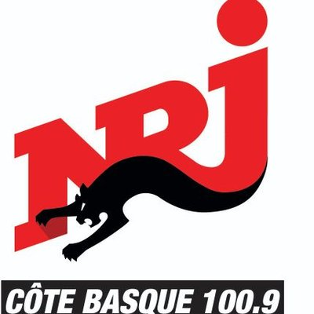
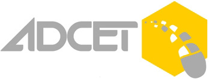
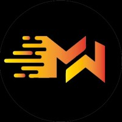
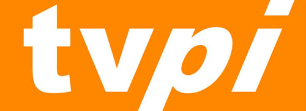

Disponible pour vos projets
Des vidéos qu'on regarde jusqu'au bout.
Vidéaste, monteur et télépilote de drone basé à Bayonne. Je me déplace en France et partout en Europe pour tourner, et je monte à distance pour des clients de tous pays.
- Vidéaste
- Monteur vidéo
- Drone
- Photographe
- Bayonne · Europe
Prestations
Douze types de vidéos, une seule exigence
Choisissez une prestation pour voir jusqu'à trois exemples de films déjà livrés.

À propos
Derrière la caméra, et derrière le montage
Je m'appelle Lucas Lavielle. J'ai commencé à filmer à 15 ans et j'en ai fait mon métier en 2021, en créant Lavielle Créations à Bayonne.
Je prends un projet du tournage à la livraison : cadrage, prises de vue drone, montage, étalonnage et sound design. Vous avez un seul interlocuteur, du premier appel à la vidéo finale.
Je travaille aussi uniquement en montage, à distance. C'est le cas avec l'agence bruxelloise Cubix Advertising, pour qui je monte des reels publicitaires. Je monte sur DaVinci Resolve : si votre équipe travaille sur Premiere Pro, je pars de votre timeline et je vous en renvoie une à la fin. Je parle français et anglais.
- DaVinci Resolve
- Compatible timelines Premiere Pro
- Télépilote de drone formé
- Français · Anglais
Je suis aussi photographe : mariages, familles, sport, entreprises, paysages et drone. Cliquez sur une photo pour l'agrandir.


 NRJ Global Régions
NRJ Global Régions






« Les vidéos que Lavielle Créations a produites pour Renocare sont devenues un pilier de notre communication. Nous les utilisons partout, de nos présentations aux futurs chantiers jusqu'à la télévision et les pauses publicitaires au cinéma. Un impact incroyable ! »
« Lucas m'a accompagné sur un tournage documentaire. Il est très pro-actif, propose du drone et de la caméra, et travaille de manière efficace dans des délais très courts. Une très bonne expérience globale, je le recommande ! »
« Lucas a été le photographe-vidéaste de mon mariage. Il nous a accompagnés durant 9 h, depuis la mairie jusqu'au bal. Les plans caméra sont magnifiques et nous avons de jolies photos avec de réels coups de cœur. Nous sommes séduits par sa sensibilité créative. Depuis, il nous arrive de le solliciter pour d'autres projets, avec toujours autant de satisfaction ! »
« Nous avons fait appel à Lucas afin de réaliser une vidéo pour un projet associatif. Tout s'est très bien passé, c'est un vidéaste expérimenté, professionnel et arrangeant. Nous recommandons vivement son travail ! »
« Lucas est très à l'écoute, sensible et discret, il a su mettre en lumière les points forts du stage et s'intégrer parfaitement au déroulé de nos journées. Il est réactif, propose, est créatif, c'est un vrai bonheur de travailler avec lui ! »
« Lucas a réalisé la vidéo de présentation de mon lieu. Le résultat est époustouflant, vidéo magnifique. Et en plus, il a su se rendre disponible pour les modifications demandées par l'agence de communication, et tout ça dans la bonne humeur et le professionnalisme. »
« Bravo à Lucas pour sa disponibilité, sa bonne humeur et la qualité de son travail. La copie rendue est propre et au prix juste. »
« J'ai travaillé avec Lucas pour mon salon de massage afin d'avoir des vidéos promotionnelles, il a été à la hauteur de mes espérances et bien plus, très à l'écoute et disponible. Merci Lucas ! »
Méthode & tarif
Simple, du premier appel à la livraison
- 1
Échange
Vous me décrivez votre projet par message ou en visio. Je vous envoie un devis détaillé, gratuit et sans engagement.
- 2
Tournage
Je me déplace avec caméra, lumière, son et drone, en France comme à l'étranger. Vous avez déjà vos images ? On passe directement au montage.
- 3
Montage & livraison
Montage, étalonnage et sound design. Vous validez la vidéo en ligne, puis je la livre dans les formats dont vous avez besoin.
Tarif journalier
500 €/ jour
Tournage ou montage. Chaque projet fait l'objet d'un devis précis, établi selon la durée, le lieu et le niveau de finition souhaité. Les frais de déplacement y sont indiqués clairement.
Demander un devisQuestions fréquentes
Ce qu'on me demande le plus souvent
Vous déplacez-vous en dehors du Pays basque ?
Oui. Je suis basé à Bayonne et j'interviens dans tout le Sud-Ouest, partout en France, ainsi qu'en Belgique, en Suisse, en Irlande et au Royaume-Uni. Les frais de déplacement sont chiffrés dans le devis, sans surprise.
Peut-on travailler entièrement à distance ?
Oui. Vous m'envoyez vos rushes par lien de transfert, je m'occupe du montage, de l'étalonnage et du sound design, et vous validez les versions en ligne. Je travaille ainsi avec des agences et des marques en France et en Belgique.
Mon équipe travaille sur Premiere Pro, est-ce compatible ?
Oui. Je monte sur DaVinci Resolve, mais je peux partir de votre timeline Premiere Pro et vous renvoyer une timeline Premiere à la fin. Vous gardez la main sur le projet dans votre logiciel.
Combien coûte une vidéo ?
Mon tarif de base est de 500 € par jour, en tournage comme en montage. Le prix final dépend du nombre de jours, du lieu et du niveau de finition. Vous recevez un devis détaillé et gratuit avant tout engagement.
Proposez-vous des prises de vue par drone ?
Oui. Je suis télépilote de drone formé (Drone Up Academy) et je vole dans le respect de la réglementation en vigueur. Le drone peut être intégré à n'importe quelle prestation.
Dans quels formats livrez-vous les vidéos ?
Dans les formats adaptés à votre diffusion : horizontal pour le web et la télévision, vertical pour Instagram, TikTok et YouTube Shorts, carré si besoin. Les formats sont définis ensemble au moment du devis.
Travaillez-vous en anglais ?
Oui. Je peux mener tout le projet en anglais, des échanges au tournage et aux sous-titres.
Contact
Parlons de votre prochain projet
Vous avez un projet vidéo en tête ? Devis gratuit sous 24h.